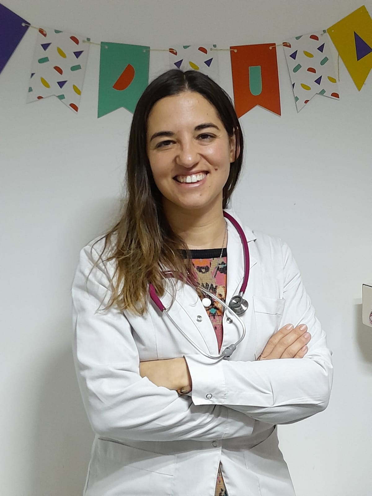
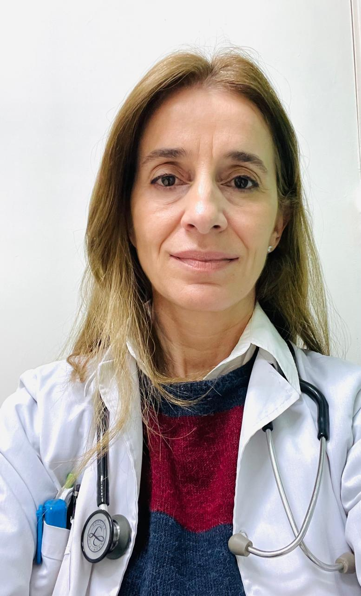
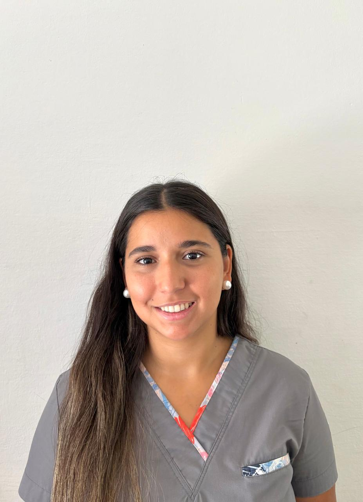
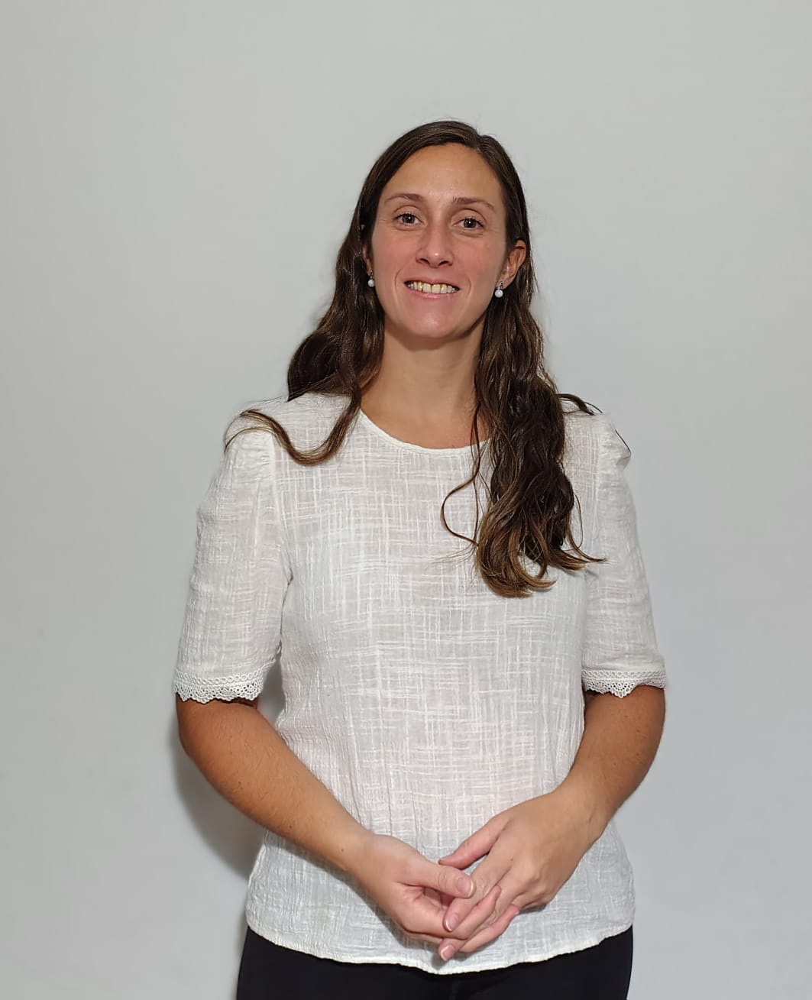
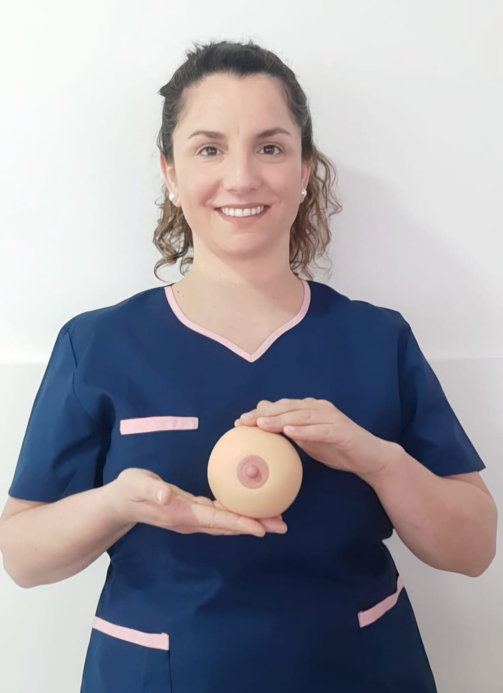

Nuestro staff
Dra. Patricia Jannello
Pediatria - Alergia e Inmunologia
Perfil Profesional
Pediatra especialista en alergia e inmunologia
Dra Soledad Hernandez
Pediatra - Neonatologa
Perfil Profesional
Pediatra - Neonatologa
Dra Maria Gabriela Rossi
Cardiologa Infantil
Perfil Profesional
(Mp: 2971) Nutricionista integral de niños y adultos.Alimentacion complementaria y BLW. Alimnetacion basada en plantas
Lic Laura Ottaviano
Nutricionista
Perfil Profesional
(Mp: 2971) Nutricionista integral de niños y adultos.Alimentacion complementaria y BLW. Alimnetacion basada en plantas
Lic Rayen Pedrosa
Fonoaudiologa
Perfil Profesional
Consultas en motricidad orofacial: -Evaluación de las funciones estomatognaticas (succión-deglución-respiración) -Rehabilitación de la deglución disfuncional y respiración oral Consultas en comunicacion, habla y lenguaje: -Evaluación y tratamiento del lenguaje -Evaluación y tratamiento en trastornos de los sonidos del habla
Lic Agustina Lafitte
Psicologa
Perfil Profesional
Betiana Paccioni
Puericultora
Perfil Profesional
Acompañamiento integral en lactancia: Prenatal: preparación e información para el inicio de la lactancia. Postnatal: asesoramiento ante dificultades como dolor, grietas, baja producción o lactancia mixta. Vuelta al trabajo/estudio: planificación de extracciones y organización para continuar amamantando.
Sec Valeria Canales
Secretaria
Perfil Profesional
Encargada de la parte administrativa en Ruca Pediatrico